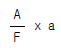
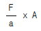
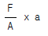
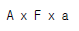

지적기능사 (2004-04-04 기출문제)
1과목: 지적일반(임의구분)
1. 조선시대의 토지대장인 양안에 기재되지 않은 것은?
- 토지 지목
- 토지 등급
- 토지 면적
- 토지 연혁
(정답률: 73%)

2. 지적공부의 열람에 관한 설명 중 옳은 것은?
- 담당자 임의로 청사 밖으로의 반출은 가능하다.
- 당해 시, 군 주민만 연람할 수 있다.
- 당해 소유자만이 연람할 수 있다.
- 소정의 절차를 밟은 자이면 누구나 열람할 수 있다.
(정답률: 76%)
3. 지적법의 3대 이념에 해당하지 않는 것은?
- 지적사무는 국가의 고유사무이다.
- 토지에 대한 모든 사항을 국민에게 공개한다.
- 지적공부에 등록하지 않아도 공식적 효력이 있다.
- 지적공부에 등록하여야만 공식적인 효력이 발생한다.
(정답률: 81%)
4. 우리나라 임야도의 축척은 모두 몇 종인가?
- 2종
- 3종
- 4종
- 5종
(정답률: 81%)
5. 지번의 설정방법으로 옳은 것은?
- 지번은 북서에서 남동으로 순차적으로 설정한다.
- 지번은 남동에서 북서로 순차적으로 설정한다.
- 지번은 남북에서 동서로 순차적으로 설정한다.
- 지번은 북동에서 남서로 순차적으로 설정한다.
(정답률: 87%)
6. 우리나라 토지를 지적공부에 등록하는 기본 원칙으로 볼 수 없는 것은?
- 실질적 심사주의
- 형식적 심사주의
- 직권등록주의
- 국정주의
(정답률: 41%)
7. 도라지를 재배하는 토지의 지목은?
- 임야
- 전
- 대
- 잡종지
(정답률: 56%)
8. 황무지(荒無地)의 지목은?
- 임야
- 잡종지
- 하천
- 유지
(정답률: 53%)
9. 축척변경 시행지역내의 토지이동이 있는 것으로 볼수 있는 것은?
- 축척변경 시행공고일
- 축척변경 인가공고일
- 축척변경 확정공고일
- 축척변경 완료공고일
(정답률: 84%)
10. 토지대장에 등록하는 내용으로 틀린 것은?
- 토지의 소재
- 토지의 지목
- 소유권 지분
- 토지의 면적
(정답률: 59%)
11. 토지가 해면 또는 수면에 접해 있을 때 토지경계 측정점으로 결정하는 선은?
- 최대만수위
- 평균수위
- 최저만수위
- 최저수위
(정답률: 85%)
12. 지적측량의 기초측량에 해당되지 않는 것은?
- 지적삼각측량
- 지적삼각보조측량
- 세부측량
- 지적도근측량
(정답률: 85%)
13. 측판측량방법에 의한 세부측량을 방사법으로 하는 경우 1방향선의 도상길이는 몇 cm 이하로 하는가?
- 5cm
- 10cm
- 20cm
- 50cm
(정답률: 45%)
14. 측판측량법에 의한 세부측량을 방법이 아닌 것은?
- 교회법
- 도선법
- 비례법
- 방사법
(정답률: 70%)
15. 다각망도선법에 의한 지적삼각보조점의 계산단위 중 잘못된 것은?
- 각 : 초 단위
- 변장 : ㎝ 단위
- 진수 : 7자리 이상
- 좌표 : ㎝ 단위
(정답률: 33%)
16. 지적도근측량의 방법에 해당하지 않는 것은?
- 경위의측량방법
- 전파기측량방법
- 측판측량방법
- 광파기측량방법
(정답률: 62%)
17. 축척 1/1000 지역에서 측판측량을 할 때 도상에 영향을 미치지 않는 지상거리는?
- 5cm
- 10cm
- 12cm
- 24cm
(정답률: 64%)
18. 두점의 관계 위치를 구하기 위하여 지적 측량에서 사용하는 좌표는?
- 입체 좌표
- 평면 직각 좌표
- 구면 좌표
- 극 좌표
(정답률: 83%)
19. 지적삼각측량에 있어 수평각 관측은 방향관측법에서 실시한다. 이 때 윤곽도 산출식은?
- 90° ÷ 대회수
- 180° ÷ 대회수
- 270° ÷ 대회수
- 360° ÷ 대회수
(정답률: 57%)
20. 세부측량을 실시할 때 거리측정 단위중 맞는 것은?
- 지적도 시행지역 : 5cm, 임야도 시행지역 50cm
- 지적도 시행지역 : 10cm, 임야도 시행지역 150cm
- 지적도 시행지역 : 15cm, 임야도 시행지역 200cm
- 지적도 시행지역 : 20cm, 임야도 시행지역 250cm
(정답률: 61%)
2과목: 지적측량(임의구분)
21. 다음 중 지적측량의 대상이 아닌 것은?
- 등록된 토지의 분할측량
- 등록된 토지의 경계를 지상에 복원하는 측량
- 등록된 토지의 합병측량
- 지적측량수행자가 행한 측량을 검사하는 측량
(정답률: 79%)
22. 시가지 지역에서 지적도근측량을 시행할 때 수평각관측 방법은?
- 방위각법
- 배각법
- 편각법
- 방향관측법
(정답률: 25%)
23. 지적삼각보조측량에서 교회법에 의해 측량하고자 할 때, 삼각형 내각의 범위는?
- 10° ~ 20°
- 20° ~ 40°
- 30° ~ 120°
- 90° ~ 180°
(정답률: 67%)
24. 지적측량에 사용하는 좌표의 원점 중 동부 원점은?
- 북위 38도선과 동경 125도선의 교차점
- 북위 38도선과 동경 127도선의 교차점
- 북위 38도선과 동경 129도선의 교차점
- 북위 125도선과 동경 38도선의 교차점
(정답률: 43%)
25. 지적도근측량의 도선에서 2등 도선에 대한 설명으로 알맞은 것은?
- 지적삼각점간 연결
- 도선명의 표기는 가 ,나 ,다 순으로 표기
- 지적삼각점과 지적삼각보조점간 연결
- 도선명의 표기는 ㄱ,ㄴ,ㄷ 순으로 표기
(정답률: 62%)
26. 지적도의 등록사항이 아닌 것은?
- 지번
- 면적
- 지목
- 경계
(정답률: 45%)
27. 지적법규상 지적기능사가 할 수 있는 사항이 아닌 것은?
- 지적측량의 보조
- 도면의 작성
- 지적측량의 계획
- 지적공부의 정리 및 등사
(정답률: 46%)
28. 지적법의 총칙에 규정된 사항으로 볼 수 없는 것은?
- 목적
- 토지의 등록
- 지번의 부여
- 법의 체계
(정답률: 53%)
29. 지적공부에 등록된 1필지를 2필지 이상으로 나누어 등록하는 것을 무엇이라 하는가?
- 지목
- 경계
- 분할
- 합병
(정답률: 90%)
30. 면적 측정의 대상으로 볼 수 없는 것은?
- 지적공부를 복구하는 경우
- 토지를 신규등록 하는 경우
- 등록 전환하는 경우
- 지번 변경하는 경우
(정답률: 65%)
31. 다음 중 현행 우리나라에서 사용되고 있지 않는 지적도의 축척은?
- 1/500
- 1/600
- 1/800
- 1/2400
(정답률: 77%)
32. 토지 합병신청을 할 수 없는 경우는?
- 지목이 같고 지반이 연속된 경우
- 소유자가 같은 경우
- 축척이 서로 다른 경우
- 같은 지번설정지역인 경우
(정답률: 62%)
33. 다음 중 지적법의 목적으로 가장 알맞는 것은?
- 합리적인 토지이용
- 능률적인 지가관리
- 합목적인 토지개발
- 효율적인 토지관리
(정답률: 64%)
34. 지적기술자의 징계를 위해서 의결을 거쳐야 하는 곳은?
- 행정자치부장관회의
- 지방지적위원회
- 중앙지적위원회
- 시· 도지사 심의회의
(정답률: 62%)
35. 토지의 표시에 관한 변경등기가 필요한 경우 그 등기필증을 접수한 날부터 몇 일 이내에 토지소유자에게 지적정리를 통지하여야 하는가?
- 7일
- 15일
- 21일
- 30일
(정답률: 48%)
36. 다음 중 경계로 볼수 없는 것은?
- 경계점좌표등록부에 등록된 좌표의 연결선
- 1필지를 결정하는 선
- 지적도에 등록된 필지와 필지를 구획하는 선
- 현황측량에 의한 위치 표시선
(정답률: 58%)
37. 공유지 연명부의 등록 정리 사항이 아닌 것은?
- 지번
- 토지 소재
- 소유 지분
- 본적지
(정답률: 64%)
38. 토지대장 및 임야대장에 등록하지 않는 것은?
- 지번
- 면적
- 소유자 성명
- 경작자의 등록번호
(정답률: 53%)
39. 경계점좌표등록부의 등록사항이 아닌 것은?
- 토지의 소유자
- 토지의 소재
- 지번
- 좌표
(정답률: 50%)
40. 일람도 축척의 작성기준은?
- 지적도 축척의 1/2
- 지적도 축척의 1/5
- 지적도 축척의 1/10
- 지적도 축척의 1/20
(정답률: 66%)
3과목: 지적공부정리(임의구분)
41. 소관청이 지적공부에 신규등록, 등록전환, 분할 등의 토지 이동이 있는 경우에 작성하여야하는 것은?
- 토지이동정리결의서
- 토지대장
- 임야대장
- 소유자정리결의서
(정답률: 74%)
42. 지적공부를 작성할 때의 제도방법을 기술한 것중 옳지 않은 것은?
- 도곽선과 도곽선 수치는 홍색으로 표시한다.
- 도면의 윗 방향은 항상 북쪽이 되어야 한다.
- 주기는 아라비아 숫자와 한글로 옆으로(횡서) 주기한다.
- 도곽선 밖에 걸치는 경계선은 홍색으로 정리한다.
(정답률: 41%)
43. 지적측량기준점의 좌표산정을 위하여 원점으로부터 종,횡선수치에 가산하는 거리는 각각 몇 m 인가?
- 종선 : 20만, 횡선 : 5만
- 종선 : 30만, 횡선 : 10만
- 종선 : 40만, 횡선 : 15만
- 종선 : 50만, 횡선 : 20만
(정답률: 84%)
44. 도면의 재작성 사유가 아닌 것은?
- 토지의 빈번한 이동정리로 인하여 도면의 경계등을 식별하기 곤란한 경우
- 장기간 사용으로 도면이 손상하여 토지의 표시가 분명하지 않는 경우
- 도곽선 신축량이 0.5mm 미만인 경우
- 1장의 도면에 등록된 토지의 일부가 도시개발사업 등의 시행 지역에 편입된 경우
(정답률: 55%)
45. 현행 규정에 의한 지적도의 도곽 크기는?
- 가로 30㎝, 세로 20㎝
- 가로 40㎝, 세로 30㎝
- 가로 30㎝, 세로 40㎝
- 가로 40㎝, 세로 50㎝
(정답률: 74%)
46. 지적도의 도곽선 제도 방법에 대한 설명으로 옳지 않은 것은?
- 도곽선 수치는 도곽 상단 및 하단 중앙에 횡서로 기록한다.
- 도곽선 수치는 각 원점을 기준하여 정한다.
- 도곽선은 0.1mm 의 홍색으로 도곽 좌표점을 연결한다.
- 도곽선 수치는 2mm의 크기로 아라비아 숫자로 홍서 한다.
(정답률: 35%)
47. 일람도에 제도할 때 폭 0.2mm의 검은색으로 제도해야 할 것은?
- 작은구거
- 수도선로
- 지방도로
- 철도용지
(정답률: 47%)
48. 직경 3mm의 크기의 원으로 제도한 것은 다음 중 어느 것인가?
- 3등삼각점
- 4등삼각점
- 지적삼각점
- 지적삼각보조점
(정답률: 52%)
49. 도면의 제명을 제도할 때 글자크기는?
- 3mm
- 4mm
- 5mm
- 7mm
(정답률: 41%)
50. 경계점좌표등록부의 등록사항으로 옳은 것은?
- 토지소재, 지번, 좌표
- 토지소재, 지번, 지목
- 토지소재, 지번, 면적
- 토지소재, 지번, 경계
(정답률: 61%)
51. 이동 측량시 면적을 측정하지 않아도 되는 것은?
- 신규등록
- 토지합병
- 등록전환
- 토지분할
(정답률: 66%)
52. 축척 1/1200 지적도 시행지역에서 전자면적측정기에 의해 필지면적을 측정하는 경우 2회 측정치의 평균이 22.0m2이었다면 2회 측정치에 대한 교차의 허용한계는?
- 1m2
- 2m2
- 3m2
- 4m2
(정답률: 25%)
53. 분할하는 토지의 신구면적 오차의 허용범위를 계산함에 있어 축척 1/3000 지역은의 축척분모는?
- 3000으로 한다.
- 6000으로 한다.
- 12000으로 한다.
- 24000으로 한다.
(정답률: 34%)
54. 다음 중 지적법시행규칙에 따라 현재 필지별 면적측정의 방법으로 사용할 수 있는 것은?
- 삼사법
- 자동복사계산법
- 푸라니미터법
- 좌표면적계산법
(정답률: 61%)
55. 분할하는 토지의 신구면적 오차를 배분한 면적산출식은? (단, F:원면적, A:측정면적합계, a:각 필지의 측정면적)




(정답률: 48%)
56. 일반적으로 도곽선의 길이에 얼마 이상의 신축이 있을 때 보정하도록 규정하고 있는가?
- 0.2㎜이상
- 0.3㎜이상
- 0.5㎜이상
- 0.7㎜이상
(정답률: 78%)
57. 도해지역의 토지를 전자면적계로 2회 측정한 결과, 측정 면적이 허용오차 이내일 경우 면적의 처리방법으로 옳은 것은?
- 작은 면적을 사용한다.
- 큰 면적을 사용한다.
- 평균하여 사용한다.
- 재측정해야 한다.
(정답률: 70%)
58. 실선과 허선을 각각 3mm로 연결하고, 허선에 0.3mm의 점 두개를 제도하는 행정구역선은?
- 시· 도계
- 시· 군계
- 읍· 면제
- 동· 리계
(정답률: 40%)
59. 방위각의 범위가 270°∼360°이일 때 종선차(Δχ) 및 횡선차(ΔY)의 부호는?
- +, +
- -, +
- +, -
- -, -
(정답률: 50%)
60. 원점을 지적측량에 사용하기 위하여 횡선수치에 가산하는 값은?
- 10만m
- 20만m
- 30만m
- 50만m
(정답률: 57%)